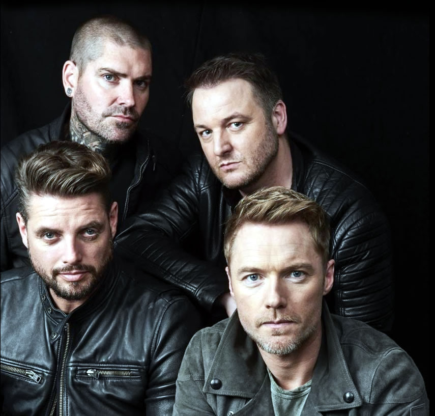

My Favouite Musical Group
Boyzone
Boyzone are an Irish boy band. Their most famous line-up was composed of Keith Duffy, Stephen Gately, Mikey Graham, Ronan Keating, and Shane Lynch. Boyzone have had 21 singles in the top 40 UK charts and 22 singles in the Irish charts. The group have had 6 UK number one singles and 9 number one singles in Ireland with 12 of their 24 singles in the UK being in the UK Top 2. Boyzone are one of the most successful bands in Ireland and the United Kingdom. In total, Boyzone had 19 top 5 singles on the Irish Singles Chart, 18 top 10 hits on the UK Singles Chart, nine No. 1 Irish hit singles and six No. 1 UK hit singles and five No. 1 albums, with 25 million records sold by 2013 worldwide.
Current Members
Keith Duffy

Michael Graham
Ronan Keating
Shane Lynch
Top 3 Of My Favorite CDs
No Matter What
"No Matter What" is a song from the 1996 musical Whistle Down the Wind and popularised by Irish boyband Boyzone in 1998 when they recorded it to tie in with the show's first UK production. The recording was written and produced by Andrew Lloyd Webber, Jim Steinman, Nigel Wright with additional production by Franglen & Lupino. The song was also featured on the US edition of the soundtrack to the 1999 film Notting Hill, and was released to American radio on 10 May 1999.
Every Day I Love You
"Every Day I Love You" is the final single from Irish Boyband Boyzone before their initial split in 2000. The song peaked at #3 on the UK Singles Chart. The song has received a Silver certification for shipping 200,000 copies in the UK.
Picture Of You
"Picture of You" is a song by Irish boy band Boyzone. It was released on 21 July 1997, as the first single from their third studio album, Where We Belong. The song was written by frontman Ronan Keating, Eliot Kennedy and Absolute. The song led to a nomination for Keating for an Ivor Novello Award, which he won, and is best remembered as the main theme song for the film Bean: The Ultimate Disaster Movie; Rowan Atkinson appeared on the single cover, and in the music video with the band.